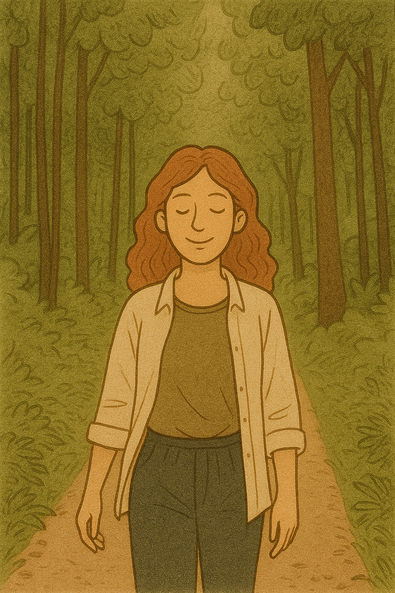

üåø How Mindful Walking in Nature Reduces Stress Hormones and Enhances Well-Being
Feeling overwhelmed by daily stress? Mindful walking in nature offers a gentle yet powerful remedy. Learn how this simple practice can lower cortisol, boost mood, and realign your mind with your body—one step at a time.
üå≥ Introduction
In today’s fast-paced world, our bodies are constantly flooded with stress hormones like cortisol and adrenaline. While these responses help us in emergencies, chronic stress can take a toll on both physical and mental health. One of the most accessible and evidence-backed antidotes? Mindful walking in natural environments—a practice that requires no fancy equipment or gym memberships, just your attention and a willingness to slow down.
ü߆ What Is Mindful Walking?
Mindful walking combines two powerful tools: movement and awareness. It involves walking slowly and consciously, paying attention to each step, your breath, and your surroundings—without judgment. Unlike jogging or hiking with distractions, mindful walking is about being, not doing.
- Focus on your footsteps and the feeling of contact with the ground.
- Observe nature's details: leaves, wind, birdsong.
- Sync your breath with your pace.
- Let go of ruminative thinking.
üî¨ The Science Behind Nature and Stress Reduction
- Cortisol Reduction: A 2019 study in Frontiers in Psychology showed a significant drop in cortisol after 20–30 minutes of nature walking, especially without digital distractions.
- Lower Blood Pressure and Heart Rate: Nature walking activates the parasympathetic nervous system, promoting relaxation.
- Improved Mood and Mental Clarity: Natural environments enhance serotonin and reduce activity in the amygdala, easing stress and anxiety.
üå≤ Why Nature Matters
Walking alone isn’t enough—the environment plays a crucial role. Forests, parks, riversides, and gardens amplify the restorative effect. The Japanese practice of Shinrin-yoku (forest bathing) has shown similar results: reduced stress, improved immunity, and better sleep.
Natural elements such as:
- Fractals in leaves and trees
- Birdsong and rustling leaves
- Fresh air and earthy scents
stimulate a calming response in the brain.
üßò‚Äç‚ôÄÔ∏è Practical Tips for Starting a Mindful Walking Practice
- Start Small: Try 10 minutes a day in a nearby park or tree-lined street.
- Ditch the Phone: Leave it behind or switch to airplane mode.
- Walk Slowly and Silently: Focus on awareness, not speed.
- Use Your Senses: 5 things you see, 4 hear, 3 feel, 2 smell, 1 taste (if applicable).
- Integrate into Routine: Make it part of your morning or post-lunch ritual.
üåº Final Thoughts
Mindful walking in nature isn’t just a leisure activity—it’s a healing ritual. With each conscious step, you train your nervous system to return to balance, ease tension from your body, and reawaken your sense of presence. This low-barrier practice is especially relevant for those seeking spiritual, plant-based, and holistic lifestyles.